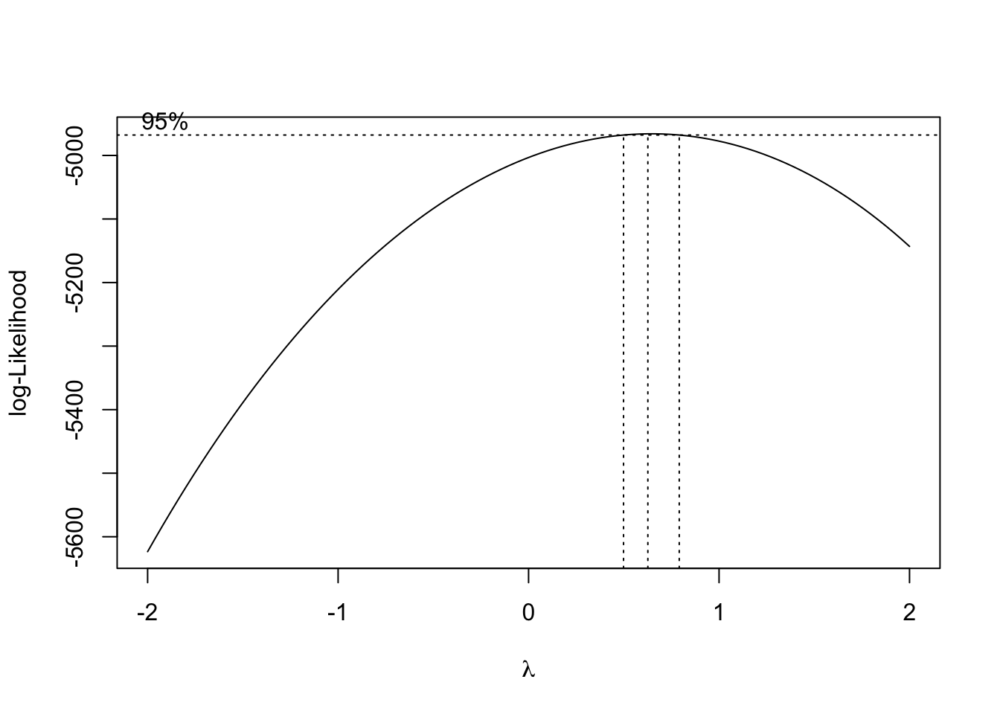
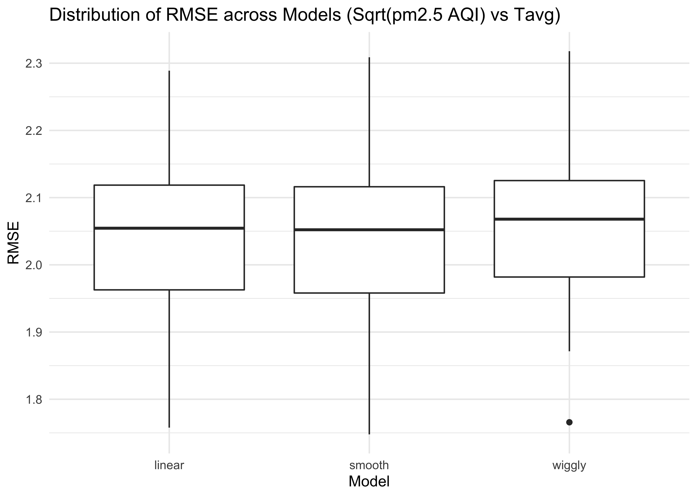
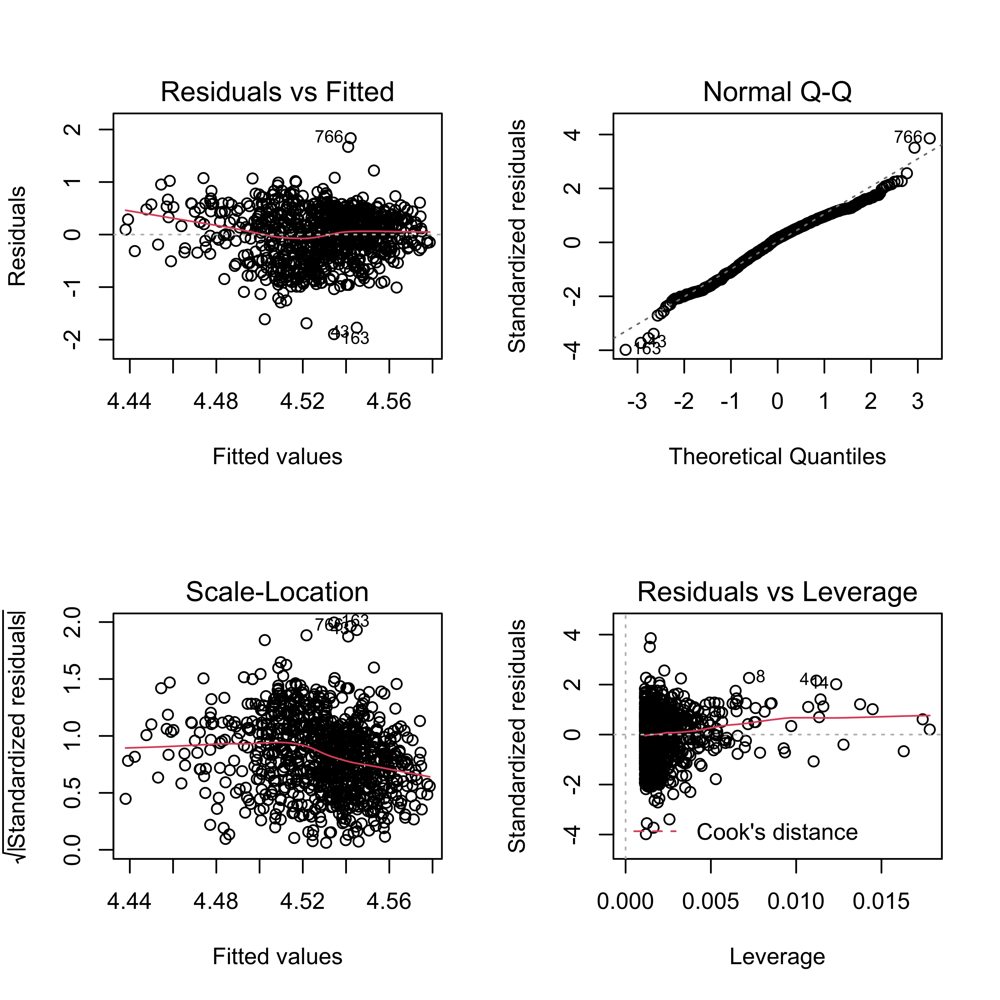
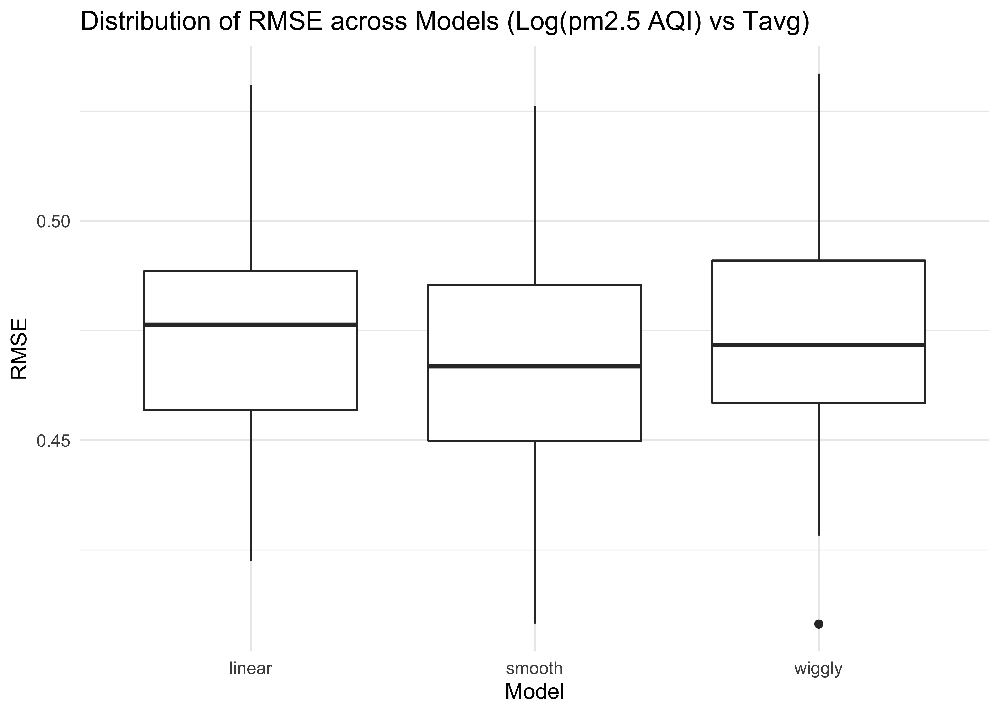

Regression Analysis
Lin Yang
11/20/2021
>>>>>>> 960d6768c6e8b6c49a0d24adc0133abffbe3d081 =======Regression Analysis
Lin Yang
11/20/2021
>>>>>>> 4a484cce9de994b0c706b861618dccfbe37f8108Regression Analysis
<<<<<<< HEAD <<<<<<< HEADLin Yang 11/20/2021
Create a data frame for regression analysis
Load and clean air quality datasets for 100 cities.
city_100_df = tibble(
=======
=======
>>>>>>> 4a484cce9de994b0c706b861618dccfbe37f8108
Mean PM2.5 AQI Difference vs GDP and Population
Create a data frame for regression analysis
Load and clean air quality datasets for 100 cities.
city_100_df =
tibble(
<<<<<<< HEAD
>>>>>>> 960d6768c6e8b6c49a0d24adc0133abffbe3d081
=======
>>>>>>> 4a484cce9de994b0c706b861618dccfbe37f8108
file = list.files("100_cities_data")) %>%
mutate(
city = str_remove(file, "-air-quality.csv"),
path = str_c("100_cities_data/", file),
data = map(path, read_csv)
) %>%
unnest(data) %>%
select(-file, -path) %>%
mutate(
city = str_to_title(city),
date = as.Date(date, format = "%Y/%m/%d"))
<<<<<<< HEAD
<<<<<<< HEAD
Select pm2.5 AQI during the lockdown period (Feb-Apr) for both 2019 and 2020.
pm25_2020 =
city_100_df %>%
filter(date > "2020-01-31" & date < "2020-05-01") %>%
rename(pm25_2020 = pm25) %>%
mutate(date = format(date, format = "%m-%d")) %>%
select(city, date, pm25_2020)
=======
=======
>>>>>>> 4a484cce9de994b0c706b861618dccfbe37f8108
Select pm2.5 AQI during the lockdown period (Feb-Apr) and calculated mean pm2.5 AQI for both 2019 and 2020. Combine two data sets to get mean AQI differences between 2019 and 2020 for 100 cities.
pm25_2020 =
city_100_df %>%
filter(date > "2020-01-31" & date < "2020-05-01") %>%
group_by(city) %>%
summarize(mean_pm25_2020 = mean(pm25, na.rm = T))
<<<<<<< HEAD
>>>>>>> 960d6768c6e8b6c49a0d24adc0133abffbe3d081
=======
>>>>>>> 4a484cce9de994b0c706b861618dccfbe37f8108
pm25_2019 =
city_100_df %>%
filter(date > "2019-01-31" & date < "2019-05-01") %>%
<<<<<<< HEAD
<<<<<<< HEAD
rename(pm25_2019 = pm25) %>%
mutate(date = format(date, format = "%m-%d")) %>%
select(city, date, pm25_2019)
Calculate daily pm2.5 AQI differences between 2019 and 2020 for each city.
pm25_diff =
left_join(pm25_2020, pm25_2019, by = c("city", "date")) %>%
drop_na() %>%
mutate(pm25_diff = pm25_2019 - pm25_2020) %>%
group_by(city) %>%
summarize(mean_diff = mean(pm25_diff, na.rm = T))
pm25_diff
## # A tibble: 100 × 2
## city mean_diff
## <chr> <dbl>
## 1 Anyang 45.5
## 2 Baoding 28.4
## 3 Baotou 6.53
## 4 Beijing 16.0
## 5 Cangzhou 23.3
## 6 Changchun 1.18
## 7 Changde 1.61
## 8 Changsha 4.03
## 9 Changzhou 27.1
## 10 Chengdu 10.5
=======
=======
>>>>>>> 4a484cce9de994b0c706b861618dccfbe37f8108
group_by(city) %>%
summarize(mean_pm25_2019 = mean(pm25, na.rm = T))
pm25_diff =
left_join(pm25_2020, pm25_2019) %>%
mutate(pm25_diff = mean_pm25_2019 - mean_pm25_2020)
pm25_diff
## # A tibble: 100 × 4
## city mean_pm25_2020 mean_pm25_2019 pm25_diff
## <chr> <dbl> <dbl> <dbl>
## 1 Anyang 135. 179. 44.0
## 2 Baoding 125. 151. 26.1
## 3 Baotou 123. 128. 4.78
## 4 Beijing 101. 117. 15.6
## 5 Cangzhou 113. 134. 21.6
## 6 Changchun 130. 131. 0.970
## 7 Changde 114. 116. 2.06
## 8 Changsha 120. 125. 4.98
## 9 Changzhou 97.0 124. 26.6
## 10 Chengdu 120. 130. 10.4
<<<<<<< HEAD
>>>>>>> 960d6768c6e8b6c49a0d24adc0133abffbe3d081
=======
>>>>>>> 4a484cce9de994b0c706b861618dccfbe37f8108
## # … with 90 more rows
Load the gdp and population dataset and join it to pm25_diff.
gdp_pop_df =
read_csv("data/gpd_and_popluation.csv") %>%
janitor::clean_names() %>%
<<<<<<< HEAD
<<<<<<< HEAD
mutate(pop_ln = log(population_thousand, base = exp(1)),
gdp_ln = log(gdp_billion, base = exp(1))) %>%
select(city, gdp_ln, pop_ln)
diff_gdp_pop_df = left_join(pm25_diff, gdp_pop_df)
diff_gdp_pop_df
## # A tibble: 100 × 4
## city mean_diff gdp_ln pop_ln
## <chr> <dbl> <dbl> <dbl>
## 1 Anyang 45.5 5.65 8.55
## 2 Baoding 28.4 5.96 9.37
## 3 Baotou 6.53 5.69 7.97
## 4 Beijing 16.0 8.17 9.99
## 5 Cangzhou 23.3 5.88 8.93
## 6 Changchun 1.18 6.38 8.99
## 7 Changde 1.61 5.89 8.67
## 8 Changsha 4.03 7.14 9.01
## 9 Changzhou 27.1 6.61 8.56
## 10 Chengdu 10.5 7.44 9.70
## # … with 90 more rows
We learned that air quality improvement in a city may correlates to the city’s GDP and population, so we created a data frame containing mean pm2.5 AQI differences between 2019 and 2020, GDP and population in 2019 for 100 representative cities. The resulting data frame of diff_gdp_pop_df contains 100 observations of 4 variables. Each row represents one unique city. Below are key variables: city: city name mean_diff mean pm2.5 AQI difference during the lockdown period (Feb-Apr) between 2019 and 2020. gdp_ln: log of 2019 GDP in billions pop_ln: log of 2019 population in thousands
Fit linear models
fit = lm(mean_diff ~gdp_ln + pop_ln, data = diff_gdp_pop_df)
summary(fit)
##
## Call:
## lm(formula = mean_diff ~ gdp_ln + pop_ln, data = diff_gdp_pop_df)
##
## Residuals:
## Min 1Q Median 3Q Max
## -22.9298 -9.3085 -0.2823 9.0568 30.3316
##
## Coefficients:
## Estimate Std. Error t value Pr(>|t|)
## (Intercept) -4.6251 19.5716 -0.236 0.814
## gdp_ln -0.8938 2.3591 -0.379 0.706
## pop_ln 2.9034 3.0895 0.940 0.350
##
## Residual standard error: 11.16 on 94 degrees of freedom
## (3 observations deleted due to missingness)
## Multiple R-squared: 0.0111, Adjusted R-squared: -0.009941
## F-statistic: 0.5275 on 2 and 94 DF, p-value: 0.5918
fit %>%
broom::tidy() %>%
select(term, estimate, p.value) %>%
knitr::kable(digit = 3)
=======
=======
>>>>>>> 4a484cce9de994b0c706b861618dccfbe37f8108
mutate(
gdp_trillion = gdp_billion / 1000,
pop_million = population_thousand / 1000) %>%
select(city, gdp_trillion, pop_million)
diff_gdp_pop_df =
left_join(pm25_diff, gdp_pop_df) %>%
select(-mean_pm25_2020, -mean_pm25_2019)
diff_gdp_pop_df
## # A tibble: 100 × 4
## city pm25_diff gdp_trillion pop_million
## <chr> <dbl> <dbl> <dbl>
## 1 Anyang 44.0 0.284 5.17
## 2 Baoding 26.1 0.388 11.7
## 3 Baotou 4.78 0.296 2.89
## 4 Beijing 15.6 3.54 21.7
## 5 Cangzhou 21.6 0.359 7.59
## 6 Changchun 0.970 0.590 8
## 7 Changde 2.06 0.362 5.83
## 8 Changsha 4.98 1.26 8.16
## 9 Changzhou 26.6 0.74 5.2
## 10 Chengdu 10.4 1.70 16.3
## # … with 90 more rows
We learned that air quality improvements in a city may correlate to the city’s GDP and population, so we created a data frame containing mean pm2.5 AQI differences between 2019 and 2020, GDP and population in 2019 for 100 representative cities. The resulting data frame of diff_gdp_pop_df contains 100 observations of 4 variables. Each row represents one unique city. Below are key variables: city: city name pm25_diff difference of mean pm2.5 AQI during the lockdown period (Feb-Apr) between 2019 and 2020 gdp_trillion: 2019 GDP in trillion pop_million: 2019 population in thousand
Find Appropriate Transformation
Since the boxcox function only works with positive values for the response variable y, we removed pm25_diff less than 0 to check if a transformation is appropriate here.
pos_diff_gdp_pop_df =
diff_gdp_pop_df %>%
filter(pm25_diff > 0)
fit = lm(pm25_diff ~gdp_trillion + pop_million, data = pos_diff_gdp_pop_df)
MASS::boxcox(fit)
<<<<<<< HEAD
=======
>>>>>>> 4a484cce9de994b0c706b861618dccfbe37f8108
The box-cox plot shows that log-likelihood has the maximum value around lambda = 0.5, so square root of pm25_diff is the recommended transformation.
MLR
trans_diff_gdp_pop_df =
pos_diff_gdp_pop_df %>%
mutate(sqrt_pm25_diff = sqrt(pm25_diff))
trans_fit = lm(sqrt_pm25_diff ~gdp_trillion + pop_million, data = trans_diff_gdp_pop_df)
trans_fit %>%
broom::tidy() %>%
knitr::kable(caption = "Linear Regression Results")
Linear Regression Results
<<<<<<< HEAD
>>>>>>> 960d6768c6e8b6c49a0d24adc0133abffbe3d081
=======
>>>>>>> 4a484cce9de994b0c706b861618dccfbe37f8108
term
estimate
<<<<<<< HEAD
<<<<<<< HEAD
=======
std.error
statistic
>>>>>>> 960d6768c6e8b6c49a0d24adc0133abffbe3d081
=======
std.error
statistic
>>>>>>> 4a484cce9de994b0c706b861618dccfbe37f8108
p.value
(Intercept)
<<<<<<< HEAD
<<<<<<< HEAD
-4.625
0.814
gdp_ln
-0.894
0.706
pop_ln
2.903
0.350
After fitting a linear model for mean pm2.5 AQI difference dependent on gdp_ln and pop_ln, gdp_ln variable has a slope of -0.894 and pop_ln variable has a slope of 2.903. However, p values of the two linear models are both very large. Therefore, we don’t have enough evidence to support that air quality improvement has a linear relation with GDP and population.
Model Diagnostics
diff_gdp_pop_df %>%
modelr::add_residuals(fit) %>%
ggplot(aes(x = gdp_ln, y = resid)) + geom_violin()

diff_gdp_pop_df %>%
modelr::add_residuals(fit) %>%
ggplot(aes(x = pop_ln, y = resid)) + geom_violin()

Cross Validation
Fit three models for mean_diff vs. gdp_ln.
linear_mod_gdp = lm(mean_diff ~ gdp_ln, data = diff_gdp_pop_df)
smooth_mod_gdp = gam(mean_diff ~ s(gdp_ln), data = diff_gdp_pop_df)
wiggly_mod_gdp = gam(mean_diff ~ s(gdp_ln, k = 30), sp = 10e-6, data = diff_gdp_pop_df)
diff_gdp_pop_df %>%
gather_predictions(linear_mod_gdp, smooth_mod_gdp, wiggly_mod_gdp) %>%
mutate(model = fct_inorder(model)) %>%
ggplot(aes(x = gdp_ln, y = mean_diff)) +
=======
=======
>>>>>>> 4a484cce9de994b0c706b861618dccfbe37f8108
3.7187826
0.2799728
13.2826555
0.0000000
gdp_trillion
0.0436444
0.3796025
0.1149740
0.9087190
pop_million
-0.0102924
0.0529619
-0.1943355
0.8463464
After fitting a linear model for sqrt(mean pm2.5 AQI difference) dependent on gdp_trillion and pop_million, gdp_trillion variable has a slope of 0.0436 and pop_million variable has a slope of -0.0103 with p values of 0.909 and 0.846 which are extremely large. Therefore, GDP and population in a city don’t have significant effects on predictions of air quality improvement, in other words, we don’t have enough evidence to support that air quality improvement has a linear relationship with GDP and population.
Model Diagnostics
par(mfrow = c(2,2))
plot(trans_fit)
<<<<<<< HEAD
In residuals vs fitted plot, residuals appear to be evenly distributed around 0, indicating that residuals have constant variance. In normal QQ plot, a straight line is not seen, so our model violates the assumption that residuals are normally distributed. The scale-location plot shows that except for #11, residuals equally spread around a roughly horizontal line, confirming that residuals have constant variance. Finally, all the four plot show that there is an influential outlier labelled #11.
=======
In residuals vs fitted plot, residuals appear to be evenly distributed around 0, indicating that residuals have constant variance. In normal QQ plot, a straight line is not seen, so our model violates the assumption that residuals are normally distributed. The scale-location plot shows that except for #11, residuals equally spread around a roughly horizontal line, confirming that residuals have constant variance. Finally, all the four plot show that there is an influential outlier labelled #11.
>>>>>>> 4a484cce9de994b0c706b861618dccfbe37f8108
Cross Validation
Fit three models for sqrt_pm25_diff vs. gdp_trillion and pop_million.
nointer_linear_mod = lm(sqrt_pm25_diff ~ gdp_trillion + pop_million, data = trans_diff_gdp_pop_df)
inter_linear_mod = lm(sqrt_pm25_diff ~ gdp_trillion * pop_million, data = trans_diff_gdp_pop_df)
smooth_mod = gam(sqrt_pm25_diff ~ s(gdp_trillion, pop_million), data = trans_diff_gdp_pop_df)
trans_diff_gdp_pop_df %>%
gather_predictions(nointer_linear_mod, inter_linear_mod, smooth_mod) %>%
mutate(model = fct_inorder(model)) %>%
ggplot(aes(x = gdp_trillion + pop_million, y = sqrt_pm25_diff)) +
<<<<<<< HEAD
>>>>>>> 960d6768c6e8b6c49a0d24adc0133abffbe3d081
geom_point(alpha = .5) +
geom_line(aes(y = pred), color = "red") +
facet_grid(~model) +
labs(
<<<<<<< HEAD
x = "log(GDP in Billion)",
y = "Mean Daily PM2.5 AQI Difference")

Fit three models for mean_diff vs. pop_ln.
linear_mod_pop = lm(mean_diff ~ pop_ln, data = diff_gdp_pop_df)
smooth_mod_pop = gam(mean_diff ~ s(pop_ln), data = diff_gdp_pop_df)
wiggly_mod_pop = gam(mean_diff ~ s(pop_ln, k = 30), sp = 10e-6, data = diff_gdp_pop_df)
diff_gdp_pop_df %>%
gather_predictions(linear_mod_pop, smooth_mod_pop, wiggly_mod_pop) %>%
mutate(model = fct_inorder(model)) %>%
ggplot(aes(x = pop_ln, y = mean_diff)) +
=======
>>>>>>> 4a484cce9de994b0c706b861618dccfbe37f8108
geom_point(alpha = .5) +
geom_line(aes(y = pred), color = "red") +
facet_grid(~model) +
labs(
<<<<<<< HEAD
x = "log(Population in Thousand)",
y = "Mean Daily PM2.5 AQI Difference")

Cross validation for mean_diff vs. gdp_ln.
cv_df_gdp =
crossv_mc(diff_gdp_pop_df, 100) %>%
=======
x = "GDP in Billion + Population in Million",
y = "Sqrt(Mean PM2.5 AQI Difference)",
title = "Sqrt(Mean PM2.5 AQI Difference) vs GDP and Population")
Cross validation for mean_diff vs. gdp_trillion and pop_million.
cv_df =
crossv_mc(trans_diff_gdp_pop_df, 100) %>%
>>>>>>> 960d6768c6e8b6c49a0d24adc0133abffbe3d081
=======
x = "GDP in Billion + Population in Million",
y = "Sqrt(Mean PM2.5 AQI Difference)",
title = "Sqrt(Mean PM2.5 AQI Difference) vs GDP and Population")
Cross validation for mean_diff vs. gdp_trillion and pop_million.
cv_df =
crossv_mc(trans_diff_gdp_pop_df, 100) %>%
>>>>>>> 4a484cce9de994b0c706b861618dccfbe37f8108
mutate(
train = map(train, as_tibble),
test = map(test, as_tibble)) %>%
mutate(
<<<<<<< HEAD
<<<<<<< HEAD
linear_mod = map(train, ~lm(mean_diff ~ gdp_ln, data = .x)),
smooth_mod = map(train, ~mgcv::gam(mean_diff ~ s(gdp_ln), data = .x)),
wiggly_mod = map(train, ~gam(mean_diff ~ s(gdp_ln, k = 30), sp = 10e-6, data = .x))) %>%
mutate(
rmse_linear = map2_dbl(linear_mod, test, ~rmse(model = .x, data = .y)),
rmse_smooth = map2_dbl(smooth_mod, test, ~rmse(model = .x, data = .y)),
rmse_wiggly = map2_dbl(wiggly_mod, test, ~rmse(model = .x, data = .y))) %>%
select(starts_with("rmse")) %>%
pivot_longer(
everything(),
names_to = "model",
values_to = "rmse",
names_prefix = "rmse_")
cv_df_gdp %>%
mutate(model = fct_inorder(model)) %>%
ggplot(aes(x = model, y = rmse)) +
geom_violin(aes(fill = model), alpha = 0.5) +
labs(title = "RMSE vs. Model")

Cross validation for mean_diff vs. pop_ln.
cv_df_pop =
crossv_mc(diff_gdp_pop_df, 100) %>%
mutate(
train = map(train, as_tibble),
test = map(test, as_tibble)) %>%
mutate(
linear_mod = map(train, ~lm(mean_diff ~ pop_ln, data = .x)),
smooth_mod = map(train, ~mgcv::gam(mean_diff ~ s(pop_ln), data = .x)),
wiggly_mod = map(train, ~gam(mean_diff ~ s(pop_ln, k = 30), sp = 10e-6, data = .x))) %>%
mutate(
rmse_linear = map2_dbl(linear_mod, test, ~rmse(model = .x, data = .y)),
rmse_smooth = map2_dbl(smooth_mod, test, ~rmse(model = .x, data = .y)),
rmse_wiggly = map2_dbl(wiggly_mod, test, ~rmse(model = .x, data = .y))) %>%
=======
=======
>>>>>>> 4a484cce9de994b0c706b861618dccfbe37f8108
nointer_linear_mod = map(train, ~lm(sqrt_pm25_diff ~ gdp_trillion + pop_million, data = .x)),
inter_linear_mod = map(train, ~lm(sqrt_pm25_diff ~ gdp_trillion * pop_million, data = .x)),
smooth_mod = map(train, ~gam(sqrt_pm25_diff ~ s(gdp_trillion, pop_million), data = .x))) %>%
mutate(
rmse_nointer_linear = map2_dbl(nointer_linear_mod, test, ~rmse(model = .x, data = .y)),
rmse_inter_linear = map2_dbl(inter_linear_mod, test, ~rmse(model = .x, data = .y)),
rmse_smooth = map2_dbl(smooth_mod, test, ~rmse(model = .x, data = .y)))
cv_df %>%
<<<<<<< HEAD
>>>>>>> 960d6768c6e8b6c49a0d24adc0133abffbe3d081
=======
>>>>>>> 4a484cce9de994b0c706b861618dccfbe37f8108
select(starts_with("rmse")) %>%
pivot_longer(
everything(),
names_to = "model",
values_to = "rmse",
<<<<<<< HEAD
<<<<<<< HEAD
names_prefix = "rmse_")
cv_df_pop %>%
mutate(model = fct_inorder(model)) %>%
ggplot(aes(x = model, y = rmse)) +
geom_violin(aes(fill = model), alpha = 0.5) +
labs(title = "RMSE vs. Model")
 We then did cross validation for three different kinds of models of mean PM2.5 difference vs. gdp_ln and pop_ln. The scatterplots indicated that none of the three models were good fits. For both gdp_ln and pop_ln, the distribution of RMSE values for each model suggested that linear and smooth models worked better than wiggly model. But the RMSE values of all the three models were significantly large, confirming all of them were bad fits.
We then did cross validation for three different kinds of models of mean PM2.5 difference vs. gdp_ln and pop_ln. The scatterplots indicated that none of the three models were good fits. For both gdp_ln and pop_ln, the distribution of RMSE values for each model suggested that linear and smooth models worked better than wiggly model. But the RMSE values of all the three models were significantly large, confirming all of them were bad fits.
Create a data frame containing weather data for regression analysis
=======
=======
>>>>>>> 4a484cce9de994b0c706b861618dccfbe37f8108
names_prefix = "rmse_") %>%
mutate(model = fct_inorder(model)) %>%
ggplot(aes(x = model, y = rmse)) +
geom_boxplot() +
labs(
x = "Model",
y = "RMSE",
title = "Distribution of RMSE across Models (Log(Mean PM2.5 AQI Difference) vs GDP +Population)") +
theme(
title = element_text(size = 6, face = "bold"),
axis.title.x = element_text(size = 10),
axis.title.y = element_text(size = 10))
<<<<<<< HEAD

=======
>>>>>>> 4a484cce9de994b0c706b861618dccfbe37f8108
We then did cross validation for three different models of mean PM2.5 AQI difference vs. gdp_trillion and pop_million. The distribution of RMSE values for each model suggested that the smooth model worked slightly better than two linear models. There was some improvement in predictive accuracy gained by allowing non-linearity, but it was not sufficient to justify this model.
Daily PM2.5 AQI vs Daily Average Temperature
Create a data frame containing weather data for regression analysis
<<<<<<< HEAD
>>>>>>> 960d6768c6e8b6c49a0d24adc0133abffbe3d081
=======
>>>>>>> 4a484cce9de994b0c706b861618dccfbe37f8108
Load weather data for 10 representative cities.
weather_df =
rnoaa::meteo_pull_monitors(
c("CHM00054511", "CHM00058362", "CHM00050953", "CHM00054342", "CHM00055591", "CHM00056294", "CHM00056778", "CHM00059287", "CHM00057036", "CHM00057494"),
var = c("PRCP", "TAVG"),
date_min = "2020-02-01",
date_max = "2020-04-30") %>%
mutate(
name = recode(
id,
CHM00054511 = "Beijing",
CHM00058362 = "Shanghai",
CHM00050953 = "Harbin",
CHM00054342 = "Shenyang",
<<<<<<< HEAD
<<<<<<< HEAD
CHM00055591 = "Lasa",
=======
CHM00055591 = "Lhasa",
>>>>>>> 960d6768c6e8b6c49a0d24adc0133abffbe3d081
=======
CHM00055591 = "Lhasa",
>>>>>>> 4a484cce9de994b0c706b861618dccfbe37f8108
CHM00056294 = "Chengdu",
CHM00056778 = "Kunming",
CHM00059287 = "Guangzhou",
CHM00057036 = "Xian",
CHM00057494 = "Wuhan"),
tavg = tavg / 10,
prcp = prcp / 10) %>%
select(-id) %>%
rename(city = name) %>%
relocate(city)
weather_df
## # A tibble: 900 × 4
## city date prcp tavg
## <chr> <date> <dbl> <dbl>
## 1 Beijing 2020-02-01 1 1.6
## 2 Beijing 2020-02-02 0.3 -2.8
## 3 Beijing 2020-02-03 0 -2.6
## 4 Beijing 2020-02-04 0 -4.1
## 5 Beijing 2020-02-05 2.8 -6
## 6 Beijing 2020-02-06 1.3 -6.1
## 7 Beijing 2020-02-07 0 -4.4
## 8 Beijing 2020-02-08 0 -0.6
## 9 Beijing 2020-02-09 0 -0.5
## 10 Beijing 2020-02-10 0 1.8
## # … with 890 more rows
Join weather_df to the AQI dataset of 10 cities.
city_10_df =
city_100_df %>%
filter(date > "2020-01-31" & date < "2020-05-01") %>%
<<<<<<< HEAD
<<<<<<< HEAD
filter(city %in% c("Beijing", "Shanghai", "Harbin", "Shenyang", "Lasa", "Chengdu", "Kunming", "Guangzhou", "Xian", "Wuhan"))
=======
filter(city %in% c("Beijing", "Shanghai", "Harbin", "Shenyang", "Lhasa", "Chengdu", "Kunming", "Guangzhou", "Xian", "Wuhan"))
>>>>>>> 960d6768c6e8b6c49a0d24adc0133abffbe3d081
=======
filter(city %in% c("Beijing", "Shanghai", "Harbin", "Shenyang", "Lhasa", "Chengdu", "Kunming", "Guangzhou", "Xian", "Wuhan"))
>>>>>>> 4a484cce9de994b0c706b861618dccfbe37f8108
pm25_tavg_df =
left_join(city_10_df, weather_df, by = c("city", "date")) %>%
arrange(date) %>%
select(city, date, pm25, tavg) %>%
<<<<<<< HEAD
<<<<<<< HEAD
drop_na()
pm25_tavg_df
## # A tibble: 794 × 4
## city date pm25 tavg
## <chr> <date> <dbl> <dbl>
## 1 Beijing 2020-02-01 120 1.6
## 2 Chengdu 2020-02-01 120 8.8
## 3 Guangzhou 2020-02-01 84 15.6
## 4 Harbin 2020-02-01 240 -14.9
## 5 Kunming 2020-02-01 75 9.3
## 6 Shanghai 2020-02-01 126 4.9
## 7 Shenyang 2020-02-01 257 -9.4
## 8 Wuhan 2020-02-01 168 10
## 9 Xian 2020-02-01 197 5.3
## 10 Beijing 2020-02-02 30 -2.8
## # … with 784 more rows
pm25_tavg_df %>%
ggplot(aes(x = tavg, y = pm25)) +
geom_point() +
labs(
x = "Daily Average Temperature",
y = "Daily PM 2.5 AQI",
title = "Daily PM 2.5 AQI VS. Daily Average Temperature Feb-Apr in 2020"
)

Fit a linear model.
fit2 = lm(pm25 ~tavg, data = pm25_tavg_df)
summary(fit2)
##
## Call:
## lm(formula = pm25 ~ tavg, data = pm25_tavg_df)
##
## Residuals:
## Min 1Q Median 3Q Max
## -95.51 -31.45 -3.12 26.22 480.43
##
## Coefficients:
## Estimate Std. Error t value Pr(>|t|)
## (Intercept) 113.7598 2.6676 42.645 <2e-16 ***
## tavg -0.4239 0.1963 -2.159 0.0311 *
## ---
## Signif. codes: 0 '***' 0.001 '**' 0.01 '*' 0.05 '.' 0.1 ' ' 1
##
## Residual standard error: 47.51 on 792 degrees of freedom
## Multiple R-squared: 0.005853, Adjusted R-squared: 0.004598
## F-statistic: 4.663 on 1 and 792 DF, p-value: 0.03112
=======
=======
>>>>>>> 4a484cce9de994b0c706b861618dccfbe37f8108
filter(pm25 != "NA")
Find appropriate transformation
fit_tavg = lm(pm25 ~tavg, data = pm25_tavg_df)
MASS::boxcox(fit_tavg)
<<<<<<< HEAD

=======
>>>>>>> 4a484cce9de994b0c706b861618dccfbe37f8108
log_pm25_tavg_df =
pm25_tavg_df %>%
mutate(lnpm25 = log(pm25))
log_fit = lm(lnpm25 ~tavg, data = log_pm25_tavg_df)
log_fit %>%
broom::tidy() %>%
knitr::kable(caption = "Linear Regression Results")
Linear Regression Results
term
estimate
std.error
statistic
p.value
(Intercept)
4.5007147
0.0250049
179.993116
0.0000000
tavg
0.0028357
0.0019151
1.480744
0.1390328
###Model diagnostics
par(mfrow = c(2,2))
plot(log_fit)
<<<<<<< HEAD
 Residuals seem to be evenly distributed around 0, which is an indication of constant variance. There are some potential outliers, such as #766 and 163. The normal QQ plot shows a roughly straight line, meaning residuals are normally distributed. Therefore, our model fitting for daily pm2.5 AQI difference dependent on daily average temperature doesn’t violate assumptions on residuals.
=======
Residuals seem to be evenly distributed around 0, which is an indication of constant variance. There are some potential outliers, such as #766 and 163. The normal QQ plot shows a roughly straight line, meaning residuals are normally distributed. Therefore, our model fitting for daily pm2.5 AQI difference dependent on daily average temperature doesn’t violate assumptions on residuals.
>>>>>>> 4a484cce9de994b0c706b861618dccfbe37f8108
Cross validation
Fit three models
linear_mod_tavg = lm(lnpm25 ~ tavg, data = log_pm25_tavg_df)
smooth_mod_tavg = gam(lnpm25 ~ s(tavg), data = log_pm25_tavg_df)
wiggly_mod_tavg = gam(lnpm25 ~ s(tavg, k = 30), sp = 10e-6, data = log_pm25_tavg_df)
log_pm25_tavg_df %>%
gather_predictions(linear_mod_tavg, smooth_mod_tavg, wiggly_mod_tavg) %>%
mutate(model = fct_inorder(model)) %>%
ggplot(aes(x = tavg, y = lnpm25)) +
geom_point(alpha = .5) +
geom_line(aes(y = pred), color = "red") +
facet_grid(~model)
<<<<<<< HEAD
=======
>>>>>>> 4a484cce9de994b0c706b861618dccfbe37f8108
cv_tavg_df =
crossv_mc(log_pm25_tavg_df, 100) %>%
mutate(
train = map(train, as_tibble),
test = map(test, as_tibble)) %>%
mutate(
linear_mod = map(train, ~lm(lnpm25 ~ tavg, data = .x)),
smooth_mod = map(train, ~mgcv::gam(lnpm25 ~ s(tavg), data = .x)),
wiggly_mod = map(train, ~gam(lnpm25 ~ s(tavg, k = 30), sp = 10e-6, data = .x))) %>%
mutate(
rmse_linear = map2_dbl(linear_mod, test, ~rmse(model = .x, data = .y)),
rmse_smooth = map2_dbl(smooth_mod, test, ~rmse(model = .x, data = .y)),
rmse_wiggly = map2_dbl(wiggly_mod, test, ~rmse(model = .x, data = .y)))
cv_tavg_df %>%
select(starts_with("rmse")) %>%
pivot_longer(
everything(),
names_to = "model",
values_to = "rmse",
names_prefix = "rmse_") %>%
mutate(model = fct_inorder(model)) %>%
ggplot(aes(x = model, y = rmse)) +
geom_boxplot() +
labs(
x = "Model",
y = "RMSE",
title = "Distribution of RMSE across Models (Log(pm2.5 AQI) vs Tavg)")
<<<<<<< HEAD

>>>>>>> 960d6768c6e8b6c49a0d24adc0133abffbe3d081
=======
>>>>>>> 4a484cce9de994b0c706b861618dccfbe37f8108